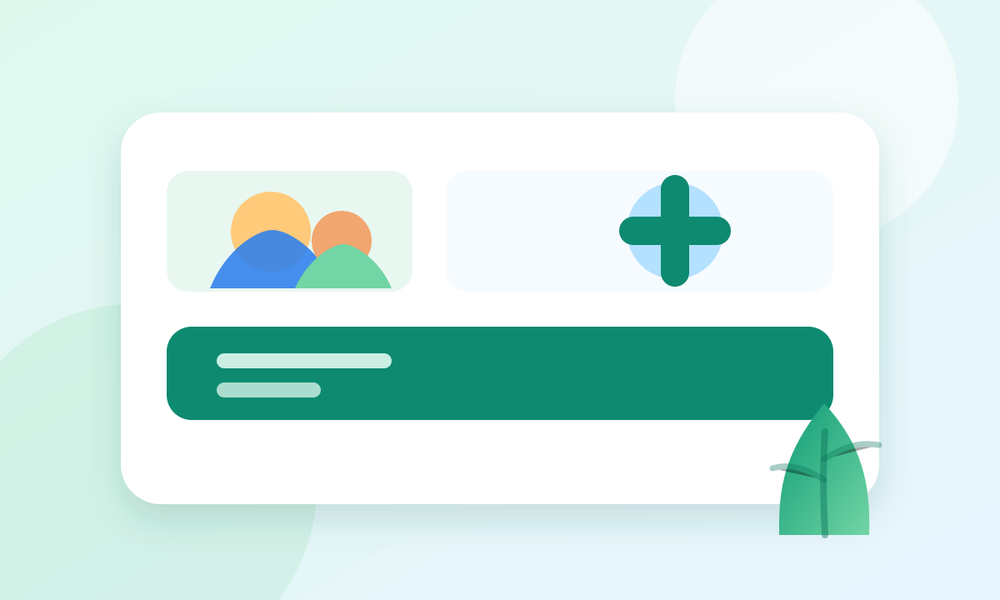

Fictional primary care clinic
Whole-family care with a neighborly touch.
Preventive visits, pediatric care, chronic condition support, vaccines, minor procedures, and telehealth — all described with dummy details for demo use.
Same-week visitsTelehealthNew patients

Services
Primary care, prevention, and follow-up.
Annual wellness exams
Vitals, physical exams, screening recommendations, lifestyle coaching, and care-plan reviews.
Pediatric sick visits
Colds, ear pain, rashes, fever checks, school forms, and growth milestone conversations.
Chronic care support
Dummy care details for diabetes, hypertension, asthma, thyroid concerns, and medication refills.
Vaccinations
Flu, tetanus, childhood schedule review, adult immunization checks, and travel consult placeholders.
Minor procedures
Simple wound care, suture removal, skin tag consults, and basic in-office testing.
Telehealth triage
Video follow-ups, medication questions, lab reviews, and non-urgent symptom guidance.
Care team
Warm care from a dummy clinical team.
Profiles are fictional and included to make the landing page feel complete.
Insurance & self-pay
Dummy plans: Blue Oak PPO, Northstar HMO, CityCare Select, Medicare demo plans, and self-pay.
- Self-pay wellness visit: $140 demo
- Telehealth follow-up: $75 demo
- Payment due at check-in
Patient policies
Arrive 15 minutes early for first visits. Bring ID, insurance card, medication list, and prior records.
- 24-hour cancellation requested
- Portal replies within one business day
- Emergency symptoms: call emergency services
Ready to book?
This is a fictional clinic. For demo booking copy: call (555) 010-1234 or email hello@evergreen-demo.test.